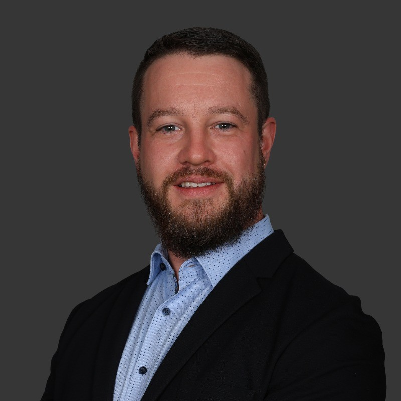

Unternehmensführung
Ich verantworte P&L, Budget, Personal, Geschäftsentwicklung und die Weiterentwicklung eines Schweizer ICT-KMU. Dabei verbinde ich wirtschaftliche Verantwortung mit Kundennähe und langfristiger Organisationsentwicklung.
ICT Leadership mit Vertrauen
Geschäftsführer · vCIO · Transformation
Ich verbinde Technologie, Organisation und Wirtschaft. Als Geschäftsführer, eidg. dipl. ICT-Manager und langjähriger vCIO unterstütze ich Unternehmen dabei, komplexe ICT-Fragen in tragfähige Entscheidungen zu übersetzen und Veränderungen konsequent umzusetzen.
Profil auf LinkedIn
Profil
Ich bin Geschäftsführer, eidgenössisch diplomierter ICT-Manager und langjähriger vCIO mit über 20 Jahren Erfahrung an der Schnittstelle von Technologie, Organisation und Unternehmensentwicklung.
Dabei verbinde ich technische Tiefe mit unternehmerischer Verantwortung, Managementkommunikation und einem ausgeprägten Blick für Abhängigkeiten und Gesamtzusammenhänge.
Besonders wirksam bin ich dort, wo unterschiedliche Perspektiven zusammenkommen: Business und IT, Strategie und Umsetzung, Innovation und Stabilität. Ich schaffe Orientierung, bringe Stakeholder zusammen und entwickle Lösungen, die technisch sinnvoll, wirtschaftlich tragfähig und organisatorisch umsetzbar sind.
Wirkungsfelder
Ich verantworte P&L, Budget, Personal, Geschäftsentwicklung und die Weiterentwicklung eines Schweizer ICT-KMU. Dabei verbinde ich wirtschaftliche Verantwortung mit Kundennähe und langfristiger Organisationsentwicklung.
Ich entwickle Strategien, Roadmaps, Zielarchitekturen und Entscheidungsgrundlagen für Geschäftsleitungen. Komplexe Technologiefragen übersetze ich in verständliche Handlungsoptionen, Risiken und Investitionsentscheide.
Ich gestalte Post-Merger-Integration, Betriebsmodelle, organisatorische Veränderungen und neue Arbeitsweisen. Mein Anspruch ist, Strategie, Menschen und Umsetzung miteinander zu verbinden.
Ich verbinde Business Continuity, Cybersecurity, Rollen- und Berechtigungskonzepte sowie Risikomanagement mit pragmatischen und umsetzbaren Betriebsmodellen.
Ich begleite Prozessdigitalisierung, Automatisierung, Dokumentenmanagement, Modern Workplace und Microsoft 365. Entscheidend ist nicht das Produkt, sondern die nachhaltige Verbesserung der Arbeitsweise.
Ich unterstütze Unternehmen beim sicheren und produktiven Einsatz von künstlicher Intelligenz. Im Mittelpunkt stehen Copilot-Adoption, Datensouveränität, Datenhygiene, Governance und konkrete Anwendungsfälle.
Ausgewählte Wirkung
Bei einem Schweizer Industriebetrieb stabilisierte ich die ICT nach dem Wegfall der gesamten vierköpfigen internen IT-Organisation. Während rund 18 Monaten übernahm ich wesentliche Führungs-, Betriebs-, Partner- und Governance-Aufgaben und wirkte am Aufbau eines neuen Betriebsmodells mit.
Für die Geschäftsleitung eines Schweizer Produktionsunternehmens erarbeitete ich Entscheidungsgrundlagen zu Business Continuity, Infrastruktur-Sourcing und mehrjähriger Investitionsplanung. Dabei bewertete ich On-Premises-, Hybrid- und Outsourcing-Modelle.
Seit 2018 begleite ich die technologische Weiterentwicklung einer Schweizer Vermögensverwaltung: professionelles Sourcing, Datacenter, standortunabhängiges Arbeiten, Digitalisierung und Automatisierung von Dokumentenprozessen sowie die Weiterentwicklung der Arbeitsplatzarchitektur.
Als Geschäftsführer begleitete ich einen Schweizer ICT-Dienstleister durch Eigentümerwechsel und Integration in eine Unternehmensgruppe. Dabei verband ich neue gruppenweite Prozesse und Synergien mit dem Erhalt von Kundennähe, lokaler Identität und persönlicher Betreuung.
Erfahrung
Seit August 2024
Geschäftsführer / CEO, Ruhoff-Informatik GmbH
März 2015 bis August 2024
Leiter Technik und Support / Mitglied der Geschäftsleitung, Ruhoff-Informatik GmbH
September 2010 bis März 2015
ICT System Engineer, Ruhoff-Informatik GmbH
Januar 2010 bis September 2010
Informatiker, Ecolab (Schweiz) GmbH
August 2004 bis August 2008
Informatik Lernender, Systemtechnik, Bühler AG
2023 · NQR 7
Eidgenössisches Diplom ICT-Manager
Höhere Fachprüfung
2009
Technische Berufsmatura
2008
Informatiker EFZ, Fachrichtung Systemtechnik
IT-Strategie · P&L · Governance · Business Continuity · Organisationsentwicklung · Sourcing · Modern Workplace · Microsoft 365 · Cybersecurity · KI und Copilot
Haltung
Ich führe über Klarheit, Vertrauen und Verantwortung. Mitarbeitende sollen nicht von mir abhängig bleiben, sondern schrittweise Verantwortung übernehmen, Entscheidungen treffen und die Organisation mitgestalten können.
Deshalb entwickle ich operative und technische Schlüsselpersonen gezielt weiter und schaffe Strukturen, die auch ohne meine permanente Präsenz funktionieren.
In Kundenmandaten sehe ich mich nicht primär als Verkäufer oder technischer Lieferant. Mein Anspruch ist, Unternehmen langfristig fair und ehrlich zu beraten, auch wenn eine für uns kurzfristig lukrative Lösung aus Kundensicht nicht die beste Variante ist.
Pragmatisch. Wirtschaftlich sinnvoll. Langfristig tragfähig.
Kontakt
Ich freue mich über den Austausch zu ICT Leadership, CIO- und IT-Leitungsaufgaben, Transformation, Digitalisierung und zukunftsfähigen Betriebsmodellen.
Profil auf LinkedIn